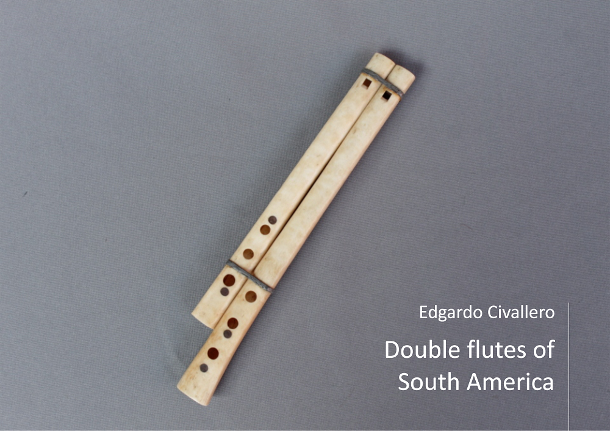

Double flutes of South America
Home > Digital books on music. Series 1 > Double flutes of South America
How to cite this work: Civallero, Edgardo (2025). Double flutes of South America. Archive edition. Bogota: El Zorro de Abajo Editora.
First edition, 2025. Archive edition, 2025 (El Zorro de Abajo Editora).
Download in PDF.
This book is an organological and ethnographic study devoted to one of the rarest and least documented types of aerophones on the continent. Its pages trace the presence, morphology, and meanings of double flutes —instruments composed of two sounding tubes blown simultaneously— in different parts of South America, with special attention to Ecuador, Peru, Bolivia, and Brazil. The analysis combines technical description with a symbolic reading of breath and sonic duplication as cultural and ritual gestures.
These flutes belong to a broader genealogy, one that links European, Mediterranean, and Asian traditions with American expressions. The study recalls that the phenomenon of multiple tubes has been common to many cultures — from the Balkans and the Caucasus to the Near East — and that, in the Americas, it goes back to pre-Hispanic Mexico, where double, triple, and even quadruple ceramic flutes existed. In South America, however, their presence is more discreet, although archaeological finds of double whistles made of stone, bone, or clay confirm that this acoustic principle was not unknown. The few historical examples — such as the "Mataco whistles" or kanohí of the Wichí of the Argentine Chaco, described by Izikowitz in 1934 — mark the starting point of an itinerary followed through a fragmentary map of survivals.
In Ecuador, double flutes take the form of the dulzaina, an instrument composed of two beaked tubes unequal in length and fingering. Traditionally made of tinplate, dulzainas were used in the ayanfaile funerary rituals of the province of Azuay and in other Indigenous celebrations, accompanied by chirimías, horns, and drums. Over time, metal was replaced by cane or wood, and later by pairs of plastic recorders adapted by rural musicians. In the mountains of Chimborazo and Cotopaxi, the instrument was known as mishqui pingullo, while in páramo communities some examples were made of bone, as part of repertoires associated with dances for the dead.
The journey continues in Peru, where double flutes are known as gaitas. The text describes a remarkable diversity of variants, scattered across different regions and adapted to local materials and uses. In Cajamarca and Hualgayoc, models carved from babillo wood are used, with a larger main tube and a shorter auxiliary one: the first without fingerholes and the second with a series of front and rear perforations. In Trujillo, monoblock versions made of higuerilla wood are preserved, with two internal channels carved into a single piece, while on the northern coast there are cane instruments joined with pitch or wax, lighter and sharper in timbre, which in some areas are called mellizas. In the central Andes, especially in Junín, the so-called pareada combines two tubes of cane or condor bone, three front fingerholes and one rear hole, and its use is imbued with a magical sense, linked to rituals of fertility and healing. Farther south, in Cusco, there are examples made of solid wood, with a double row of fingerholes and bevels at different heights, testifying to a technical evolution that seeks greater melodic complexity without abandoning the logic of double breath.
In the Lake Titicaca area, one finds the uña pinkillos, double flutes played by Aymara communities in Peru and Bolivia. These instruments consist of a long, perforated main flute joined to a smaller, mute one without fingerholes. The interaction between the two produces a harmonic reinforcement that thickens the sound and generates a continuous resonance, similar to a drone. The practice of the uña pinkillo responds to a collective conception of music, where the main voice and the secondary voice intertwine as a reflection of the complementary pairs that order the Andean worldview. A similar instrument, the marimacho, is played in the same regions, although it has different proportions and forms part of the pinkillo bands that accompany agricultural festivals, carnivals, and rituals of thanksgiving to the earth.
The study then moves to Indigenous Brazil, where the double flute reappears in very different forms. In the Upper Xingú, the Waura play the watana during the kwaryp ritual, a ceremony dedicated to the dead in which the sound of the flutes represents the voice of the ancestors. The Nambikwara of Mato Grosso have similar instruments, used to announce festivals and communal gatherings. Along the Guaporé River, the Moré and Itoreauhip, peoples now nearly extinct, made double flutes called napatók, crafted from cane or wood and bound with plant fibers. The descriptions of Snethlage and other travelers from the early twentieth century confirm that this type of aerophone was one of the few expressions of instrumental polyphony in the forests of western Amazonia.
The book finally returns to the double whistles of the Chaco, made of bone or cane and used as toys or sonic amulets, in order to emphasize that, although organologically different, they share the same symbolic logic of duplicating the voice. The work concludes with a reflection that runs through the entire study: the double flute, more than a technical instrument, is an acoustic metaphor of relation. The duplicated sound is dialogue, shared resonance, an echo of the principle of duality that structures American cosmologies. The duplication of breath does not merely multiply sound; it unfolds it, generating an elemental harmony between the human and the other-than-human.
In this sense, this work is not only an inventory of organological forms, but an archaeology of breath and its resonances. Each pair of tubes described —whether in Ecuadorian tinplate, Peruvian wood, Aymara cane, or Amazonian palm— becomes a testimony of sonic continuity: a persistent way of affirming life through shared breath. The work offers a precise and poetic cartography of that universe: that of musics that do not seek the solitary voice, but common vibration.